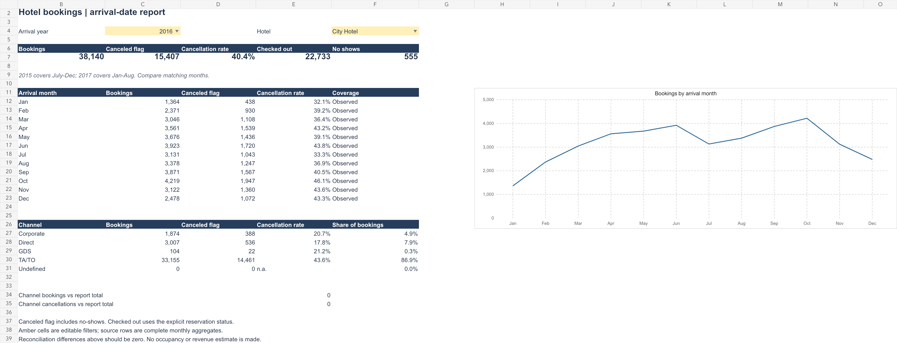
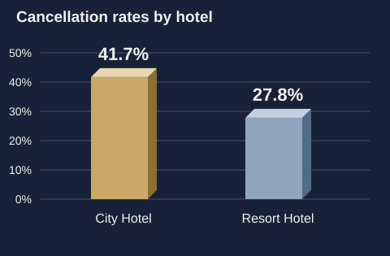
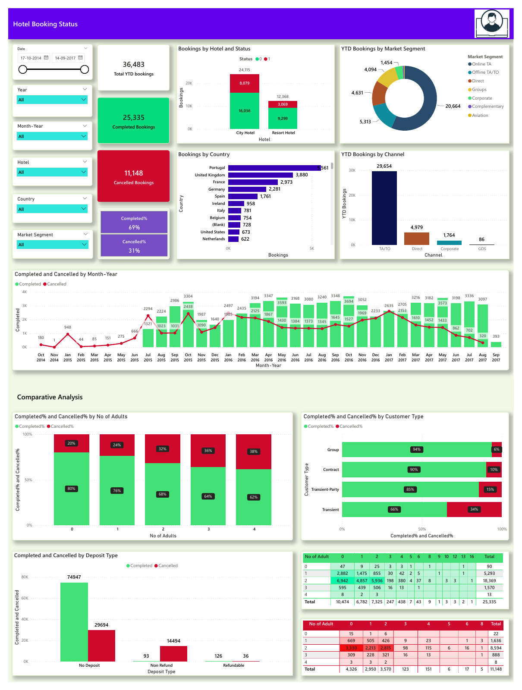

Hotel booking cancellations
A traceable path from 119,390 source bookings to useful SQL and Excel reporting.

The question
Where should a hotel team investigate cancellations, and how can reporting avoid confusing dates, booking statuses or incomplete years? I extended an earlier Power BI project with a relational SQL model and an Excel report.
Data & preparation
The source contains 119,390 bookings at two Portuguese hotels, with arrivals from July 2015 to August 2017. It comes from the Hotel Booking Demand research dataset, via an existing Onyx Data challenge workbook. Eleven source fields and the original worksheet row number are retained; no bookings are removed.
I checked cancellation flags against reservation status, retained identical-looking records that may represent different bookings, and used the source row number as a technical key. These are bookings, not unique guests.
Method & validation
A booking fact table joins hotel, channel, segment and arrival-date dimensions. SQL uses conditional aggregation, CTEs, LAG and DENSE_RANK to produce monthly and segment comparisons. The full join preserves all 119,390 rows, and hotel/month counts reconcile to pandas.
The Excel report uses year and hotel selectors, SUMIFS, count-weighted rates, a native chart and reconciliation formulas. It has no embedded PivotTable or Power Query connection; a companion M script is supplied separately.
What the analysis shows
| Measure | Full-snapshot result |
|---|---|
| Bookings | 119,390 |
| Cancellation flag | 44,224 · 37.0% |
| City Hotel flag rate | 41.7% |
| Resort Hotel flag rate | 27.8% |
| No-shows included in flag | 1,207 |
| Explicit Check-Out status | 75,166 |
City Hotel has the higher flag rate, but hotel mix, channel and lead time need investigation before explaining the gap. The flag includes no-shows; non-cancelled does not automatically mean a completed stay.

Recommendation & next steps
Investigate high-volume channel and lead-time segments, then trial targeted booking confirmations. Compare cancellation flags and confirmed arrivals across matched months; 2015 and 2017 are partial years. A controlled trial would be needed to estimate any effect.
This is a proposed operational test. No implemented savings, occupancy improvement or revenue uplift is claimed.
Limitations & lessons
This historical snapshot does not describe current hotel performance. There is no room inventory, cost or payment data, so occupancy, realised revenue and profit cannot be calculated. The central lesson is to keep the reporting grain and date definition explicit.
Earlier Power BI artefact
The original dashboard has unresolved scope and date-axis issues: its YTD card shows 36,483 and its axis includes dates before the first source arrival. The PBIX has not been repaired or refreshed here. The verified results above come from SQL and Python.

Code, workbook & sources
Antonio, de Almeida & Nunes: Hotel booking demand datasets · CC BY 4.0. Reproduction instructions and AI-assisted development disclosures are in the repository.